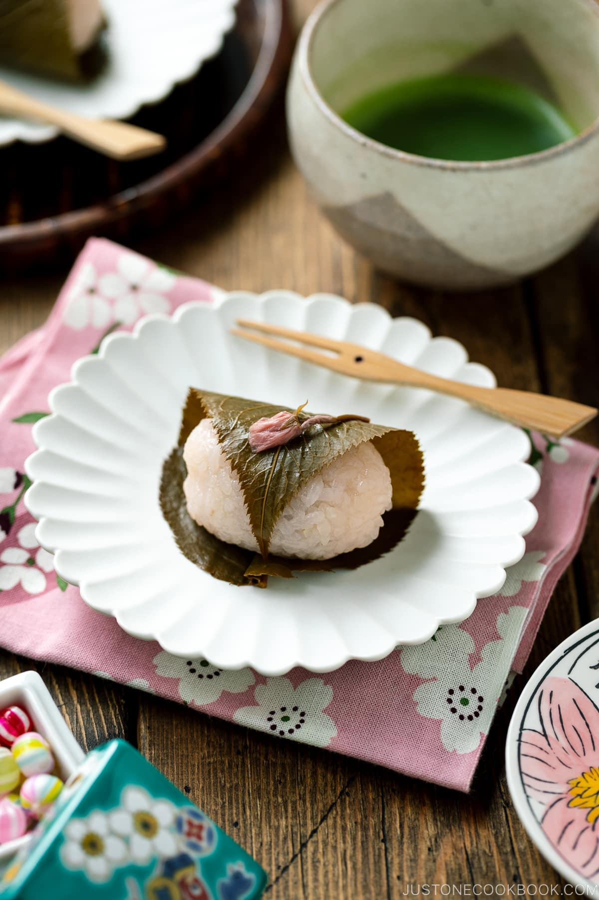

Sakura mochi

Description
Spring is in the air and flowers are blooming. Everyone anticipates cherry blossom season. While we wait for the trees to come into full bloom, let’s make Sakura Mochi (桜餅). It’s a popular spring-themed Japanese confectionery along with Hanami Dango.
Soft yet chewy, the flavor of the mochi balances beautifully between sweet and salty while bringing forth the fragrant note of cherry blossom.
Ingredients:
- Short-grain glutinous rice
- Sugar
- Red food coloring
- Sweet red bean paste (anko)
- Salt-pickled cherry blossom leaves
- Salt-pickled cherry blossoms
Preparation:
- Rinse the glutinous rice, measure the water, and mix in sugar and red coloring.
- Cook the glutinous rice just like regular steamed rice.
- Partially mash the cooked rice and divide it into 8 balls.
- Stuff the rice balls with sweet red bean paste and shape them into a cylinder shape.
- Wrap the glutinous rice balls with cherry blossom leaves, and top with cherry blossom flowers.